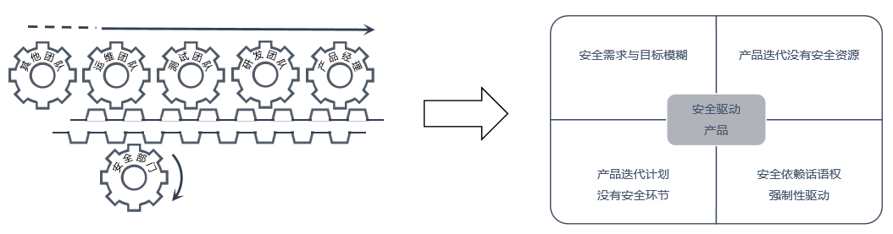
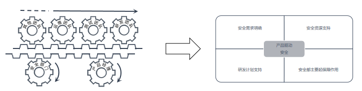
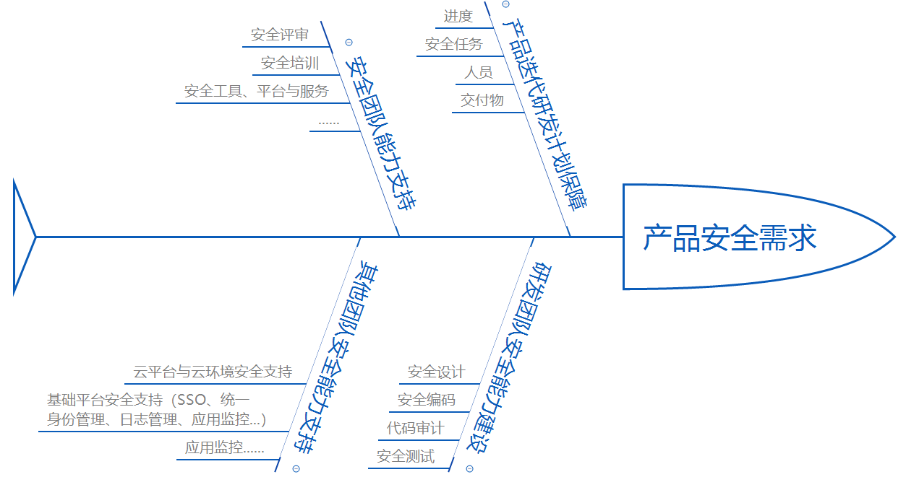
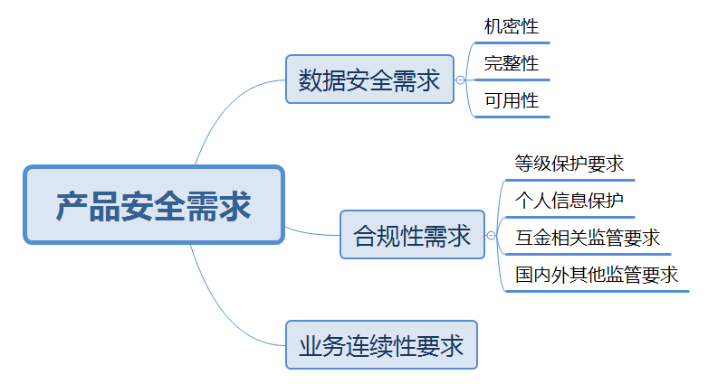
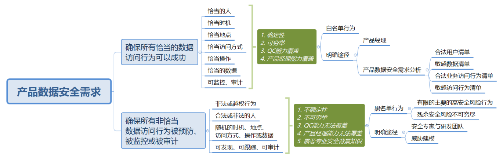

本文从产品经理的角度出发，对产品经理的安全职责、产品驱动安全的内涵、工作内容、工作方法、所需安全资源、以及产品经理的安全工作量进行了分析。希望所有产品经理在没有心理负担的情况下，有目标、有方法、有资源推进产品安全建设。
安全是软件产品天然属性的一部分，“无安全不金融”，对于金融软件产品而言，安全尤为重要，因为客户总是能够从各种安全漏洞联想到他的金融资产安全和个人信息安全。以前偶尔会在一些安全沙龙或峰会听见同行吐槽，“信息安全说起来重要、做起来次要、忙起来不要”。吐槽背后的原因很复杂，其中很重要的一点是跟产品经理安全意识淡薄、不清楚如何推进产品安全建设有关，比如不重视产品安全属性、产品安全需求不明确、产品安全资源不充分、产品安全建设无从下手等。本文主要站在产品经理的角度，从产品经理能力维度出发，探讨产品经理如何推动产品的安全性建设。
众所周知，安全性作为软件产品的天然属性，从产品定义与规划角度来看，产品经理对产品安全负有不可推卸的责任，但产品经理如何履行自己的安全职责，业界还没有给出一个清晰可行的行动方案。
目前，软件产品安全需求通常是基于开发人员和安全人员的职业常识提出相应的解决方案，比如目前业内比较通用的敏感信息五要素分析方法：
| 1 | 2 | 3 | 4 | 5 |
|---|---|---|---|---|
| 姓名 | 身份证号 | 电话号码 | 银行卡信息 | 联系地址 |
这种方法简单易行，但往往不能涵盖所有的敏感信息，比如
这些信息均为有价值的敏感数据，显然不属于前述的敏感数据范围，但往往没有明确的防护要求。从特定业务场景出发，产品经理对敏感数据范围及其业务价值最有发言权。
前述的敏感信息五要素分析方法是典型的安全驱动产品的方法，即安全部门推动产品相关各团队的安全工作开展。这种模式存在很多弊端，比如：

（图1 安全驱动产品）
众多的安全实践表明，安全驱动产品的思路与方法存在众多弊端，如果反过来，产品驱动安全，让产品经理明晰自己的安全职责、主动推动产品的安全建设，就会产生对比鲜明的效果。
产品驱动安全并非意味着产品经理单一角色推动产品的安全建设，而是说产品经理主动承担相应的产品安全责任，主动与安全部门一起推动产品的安全建设，由安全驱动产品的单轮驱动转变为产品驱动安全的双轮驱动。如下图所示：

（图2 产品驱动安全）
安全是软件产品的天然属性，是产品经理职责的一部分。同时产品经理作为产品规划演进与研发资源投入的指挥棒，可以保证研发团队在安全上的适度投入。通过简单分析，产品经理承担产品安全责任，主动推动产品安全建设应该是十分合理的逻辑。
产品经理有意愿做好产品安全，可能会问如下几个问题：
为产品经理解决了以上问题，消除其后顾之忧，产品经理才有可能大概率地拥抱安全，从根本上解决研发与安全间的矛盾。
产品经理的安全工作内容大致如下：

（图3 产品经理的安全工作内容）
产品安全需求是指站在业务角度，软件产品需要满足的数据安全需求、业务合规需求和业务连续性要求，它是业务安全需求的一部分。本文描述的产品安全需求通常包括：

（图4 产品安全需求）
产品数据安全需求是指系统安全体系应确保恰当的用户在恰当的时间与地点以恰当的途径用恰当的动作访问恰当的数据，确保其承载数据的机密性、完整性和可用性。即系统安全体系应确保类似于白名单的合法访问行为清单，只要属于清单范围内的行为均为合法行为，白名单行为之外的行为都是默认不恰当的数据访问行为，需要安全措施进行预防，本文称之为黑名单行为。
由于黑名单行为通常为黑客攻击行为，其典型行为的分析与罗列需要较强的攻防技术背景，不在业务人员和产品经理能力范围之内，需要安全专家根据产品运行环境进行分析，所以本文要求产品经理明确的产品安全需求通常为其白名单部分，黑名单部分需要产品经理组织安全专家和研发专家配合明确。产品设计所包含的各种安全措施主要目标就是确保白名单行为一定成功，黑名单行为一定被预防、监控和审计。
从业务安全角度出发，定义合法数据访问行为之后，还需要有数据访问行为审计手段，帮助业务确保访问行为的正确性，以及对违规的数据访问行为进行审计。

（图5 产品数据安全需求）
基于上文分析，白名单行为清单的明确只需要了解业务模型相关信息就可以做到，对于产品经理而言，不存在能力上的门槛。过程中产品经理需要明确的数据包括：
| ID | 内容 | 说明 |
|---|---|---|
| 1 | 合法用户清单 | 系统用户类别、办公地点与访问方式，用户类别应包括有接口调用关系的对端系统 |
| 2 | 敏感数据清单 | 敏感数据范围与清单，及其分类、分级说明 |
| 3 | 业务访问行为清单 | 系统用户与敏感数据之间的访问映射关系与操作方式清单 |
| 4 | 敏感行为清单 | 需要记录业务操作日志的最小集合，为业务审计提供依据，该清单与上面的业务访问行为清单基本重合 |
在明确上述信息的过程中，产品经理应遵循如下两个原则：
| ID | 原则 | 解释 |
|---|---|---|
| 1 | 最小权限 | 将用户对数据的访问操作的方式和动作最小化，如对于某个用户类别，OA网访问可满足业务需求的就不应开放到外网访问，数据脱敏可读可满足业务需求的情况应不开放明文可读或可写权限 |
| 2 | 知所必需 | 将用户的数据访问范围最小化，如对于某个用户类别，单个文件访问可以满足业务需求，决不开放2个或多个文件访问 |
设计人员可以根据该白名单进行权限管理与访问控制模型设计，测试人员可以将白名单作为数据安全测试基线，任何违背白名单的测试发现均为系统的安全bug，比如：
合规性需求是指由于系统运行地点、服务网络以及客户所在地区或国家相关部门，对服务提供模式、数据安全以及业务连续性提出了限制性要求。目前公司系统所面对的主要监管要求包括：
| ID | 监管要求 | 监管层级 |
|---|---|---|
| 1 | 网络安全法及其两高释法（国家） | 国家 |
| 2 | 信息系统等级保护（公安部） | 公安部 |
| 3 | 个人信息保护规范（工信部） | 工信部 |
| 4 | GDPR（涉及到服务欧盟公民的相关IT服务） | 欧盟 |
2019年国家相关部门提出了一系列App收集个人信息相关监管要求：
| ID | 名称 | 时间 | 发文部门 |
|---|---|---|---|
| 1 | 关于开展App违法违规收集使用个人信息专项治理的公告 | 2019/1/25 | 中央网信办、工业和信息化部、公安部、市场监管总局 |
| 2 | 移动互联网应用基本业务功能必要信息规范 | 2019/6/1 | 全国信息安全标准化技术委员会 |
| 3 | App违法违规收集使用个人信息自评估指南 | 2019/3/1 | APP专项治理工作组 |
| 4 | App违法违规收集使用个人信息行为认定方法（征求意见稿） | 2019/5/5 | APP专项治理工作组 |
| 5 | 信息安全技术 移动互联网应用程序（App）收集个人信息基本规范（草案） | 2019/10/25 | 全国信息安全标准化技术委员会 |
| 6 | 关于开展APP侵害用户权益专项整治工作的通知 | 2019/11/6 | 工业和信息化部 |
在产品经理罗列出合规要求、安全部得到相关部门的权威解释后，与产品线沟通建议各种安全措施设计，将会在很大程度上满足IT安全合规要求。等级保护相关要求为所有系统需要面对的共通要求，无需产品经理罗列，安全部可以直接解释。
关于具体安全需求的定义与维护方法，笔者将通过其他文章进行说明。
分析产品经理的安全工作内容，最主要的考验来自于明确业务安全需求的四个清单。相关安全能力分析如下表：
| ID | 产品经理安全需求工作内容 | 能力分析 |
|---|---|---|
| 1 | 明确合法用户清单 | 无需额外能力，需要描述模板支持 |
| 2 | 明确敏感数据清单 | 需要理解安全基础概念，在指定敏感数据安全等级时，需要敏感数据分类分级标准支持，需要模板支持 |
| 3 | 明确业务访问行为清单 | 无需额外能力，需要描述模板支持 |
| 4 | 明确敏感行为清单 | 无需额外能力，需要描述模板支持 |
产品经理其他安全开发工作所需能力分析如下：
| ID | 工作内容 | 能力分析 |
|---|---|---|
| 1 | 保障安全研发资源 | 在产品迭代研发计划中增加安全相关活动与环节，并指定责任人。计划制订本身无需额外能力，但在安排相关安全活动时，为保持开发的敏捷性和现有的项目管理机制不变形，需要安全、质量管理和项目管理等部门提供方法论支持。需要产品经理有一定的安全意识。 |
| 2 | 推动研发团队安全能力建设 | 为了保证迭代研发计划中的活动执行成功，研发团队（设计、开发和测试）需要较高的安全意识和一些基础的安全能力，如安全设计、安全编码和安全测试。安全部应统筹各团队的安全能力建设需求，提供相关安全能力建设支持。需要产品经理有一定的安全意识。 |
| 3 | 整合周边安全资源 | 为了保证迭代研发计划中的活动执行成功，需要整合周边部门的专业性安全服务，比如安全部的各类安全评审服务、威胁建模、代码审计、渗透测试、流量实时监控等服务，基础研发部的SSO平台，运维的统一身份管理服务等等。甚至需要法务与合规等部门的安全支持。安全部门有责任提供和维护一份持续可用的安全服务清单，让产品经理和研发团队知晓服务清单，并知晓何处获取相关安全服务。需要产品经理有一定的安全意识。 |
综上所述，产品经理要履行相关安全职责，必要的能力和素质是具有较高安全意识，能够理解相关安全基础概念，没有过高的能力门槛，通过一定的安全培训，产品经理完全可以达到相应的能力要求。
针对目前敏捷开发与DevOps开发普遍落地的情况，安全开发不应固守与瀑布开发相结合的陈旧经验。因为瀑布开发周期长、资源充分，在繁杂的计划活动中安排一些零星的安全活动不会产生明显的延期压力和资源压力。而敏捷开发和DevOps开发要求快速响应用户需求的同时，兼顾开发质量与效率，如果在迭代计划中设置过重的安全开发活动，迭代开发容易失去敏捷特性。
为了将安全开发理念在敏捷与DevOps开发中得到贯彻，建议采用如下原则：
对于一些安全开发活动的计划安排示例如下：
| ID | 安全活动名称 | 迭代执行要求 | 触发场景与基线示例 |
|---|---|---|---|
| 1 | 创建产品安全需求名单 | 一次性执行 | 产品原型发布之前 |
| 2 | 维护产品安全需求白名单 | 每迭代执行 | |
| 3 | 评审产品安全需求白名单 | 多迭代执行 | 重大需求变更或累积变更开发量达到n人天 |
| 4 | 创建产品数据流图 | 一次性执行 | 产品原型发布之前 |
| 5 | 建立威胁初始模型 | 一次性执行 | 产品原型发布之前 |
| 6 | 维护威胁模型 | 每迭代执行 | 重大需求变更或累积变更开发量达到n人天 |
| 7 | 评审威胁模型 | 多迭代执行 | 重大需求变更或累积变更开发量达到n人天 |
| 8 | 安全设计评审 | 多迭代执行 | 重大需求变更或累积变更开发量达到n人天 |
| 9 | 代码扫描及其报告分析（开发） | 每天/迭代执行 | |
| 10 | 代码扫描及其报告分析（安全部） | 多迭代执行 | 重大需求变更或累积变更开发量达到n人天 |
| 11 | 深度黑盒安全扫描 | 每天/迭代执行 | |
| ... | ... | ... |
上表中“多迭代执行”指的是按照一定要求，间隔多个迭代后执行一次。关于多迭代执行的安全活动需要制订一个执行基线，该基线无标准可参考，需要根据各产品线实际情况逐渐摸索调整。
安全活动的触发场景与基线不是固定的，随着团队安全能力与自动化、工具化程度的提高，多迭代执行的安全活动可能转变为每迭代执行；不是所有识别出来的安全活动都必须执行，一切以控制主要安全风险、不拖迭代项目后腿为基准。通常安全团队会与所有产品经理和项目管理进行多次沟通，提出一个多方基本认可的安全活动触发场景与基线表，供产品经理参考。
产品经理在履行各项安全职责时，需要周边部门提供的安全服务与支持包括但不限于：
| ID | 产品经理工作内容 | 所需资源或服务 | 提供者 |
|---|---|---|---|
| 1 | 明确产品安全需求白名单 | 敏感数据分类分级标准及其相关模板和Demo；产品安全需求变更发生判断标准 | 安全部 |
| 2 | 保障安全研发资源 | 安全活动清单及其迭代基线 | 安全部&QA |
| 3 | 推动研发团队安全能力建设 | 安全培训与实操 | 安全部 |
| 4 | 整合周边安全资源 | 安全资源清单，包括安全咨询、评审、培训、开发包、平台或服务 | 安全部&法务&合规 |
产品经理安全工作压力分析如下表：
| ID | 产品经理工作内容 | 产品经理工作压力分析 |
|---|---|---|
| 1 | 明确产品安全需求白名单 | 初次创建产品安全需求白名单的4张表格有一定的工作量，但属于一次性工作。产品经理也可以分批次完成，先完善主要信息，其它信息后续择机补充。后续产品安全需求白名单维护工作压力比较小，新增需求或变更只要不触动白名单4张表格的内容，就无需维护。实践表明，产品的用户、数据、访问白名单在经过少数几轮迭代后趋于稳定，很少有机会对表格进行变更。 |
| 2 | 保障安全研发资源 | 是迭代研发计划制订与推进工作的一部分，无需额外花费时间；每年可能需要花费一天左右的时间参加安全培训，了解安全活动迭代安排基线，了解安全基础概念，了解产品安全需求制订与维护方法。 |
| 3 | 推动研发团队安全能力建设 | 在研发团队能力建设计划与方案中添加安全相关内容，可能会涉及到一部分预算和人天。能力建设推进过程中可能涉及到一部分参加培训和演练的人天投入，但这部分资源占比应该会较小，构不成明显资源压力。可能存在一些安全部能力暂时无法覆盖的培训，需要外购，比如云安全、移动安全等，产品经理可以独立申请预算，或安全部跟产品线统筹统一申请预算。 |
| 4 | 整合周边安全资源 | 为解决已知安全问题，很多产品经理日常也在推进该项工作，成为日常沟通协调工作的一部分。主要是将这种被动的、个案化的行动转换为主动的、常态化的工作行为。目前公司有较为清晰的安全责任划分和流程，构不成明显工作压力。 |
上表描述了产品经理可能会遇到的主要工作内容，但并不是全部内容。整体而言，会增加产品经理一定的工作量，但不会构成明显的工作压力。
产品经理对产品安全负有责任，通过明确产品安全需求中的白名单指明产品安全目标，通过制订安全研发计划、推动团队安全能力建设和协调周边安全资源，实现产品安全落地。
经过简短安全培训后，相关工作均在产品经理能力范畴，工作量不会对产品经理形成心理压力，灵活的安全活动触发标准也不会影响研发的敏捷性。笔者在这里衷心期望各位产品经理放心大胆、勇往直前地拥抱安全，和安全部一起不断地将产品安全推向新高潮。
在笔者的工作经历中，安全部门为了推动安全工作，总是想着法地“抱大腿”，期望借助外力以推动安全工作，却没有注意到产品经理这个“大腿”，只需觉醒其安全意识，这一“大腿”不仅粗壮有力，而且有着主动拥抱安全的强烈动因。
安全部与产品经理合作，很容易建立基于迭代开发的常态化安全落地机制，而与其他部门合作，例如合规或法务，常常只在特定阶段推动特定安全工作的落地。建议各位应用安全同行和产品经理多多交流，因为：产品经理才是我们安全部最需要拥抱的“大腿”！
作者：危国洪 郭建伟
来源：宜信技术学院